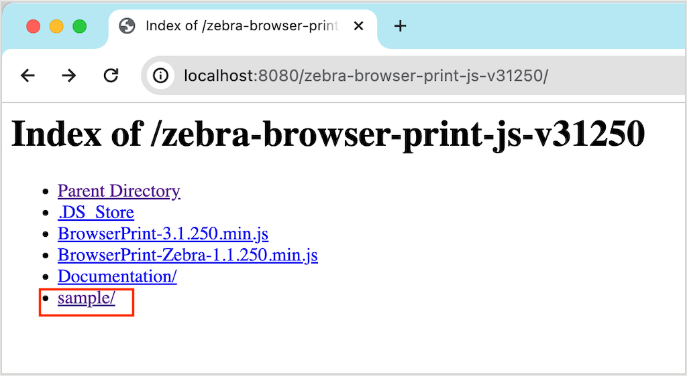

Printing Error: Failed to write to device: Unable to establish connection to ZD421-203dpi ZPL (D8J231506086)
//Expert user has replied.
Hi
We are running an Imac with MacO Ventura 13.6.3 using Chrome and Browser Print to print to ZEBRA ZD421.
We are constantly having problems with intermittent connections to the printer and getting this message:
Printing Error: Failed to write to device: Unable to establish connection to ZD421-203dpi ZPL (D8J231506086)
Inorder to get connection I usually open up Package contents and run the sample Index.html file and send a test an sometime this engages the printer othertimes i restart the printer etc.
Can someone advise / please help?
Best regards
Stuart
8 Replies
Is the ZD421 connected via USB or network? Make sure the Browser Print client app on the iMac is the latest and the Browser Print JavaScript library is the latest.
Could you do a quick test with our Browser Print demo site to see if you get the same connection errors? It's https://cagdemo.com/. This demo site uses the latest version of the Browser Print JavaScript library.
Hi the ZD421 is connected via USB, the Browser Print client app has been deleted fully and installed multiple times this year, we are using Browser Print v1.3.2.489, and we have the latest JavaScript library.
I tried the test on the demo site and was asked to add caddemo.com as an accepted site which I did so it shows up as an accepted host, but I still got similar error messages when trying to print:
An error occurred while printing. Please try again.Failed to write to device: Unable to establish connection to ZD421-203dpi ZPL (D8J231506086) 'Button showing" Try Again
It looks like an issue with the USB connection on macOS. I am seeing the same USB connection failure on the MacBook Sonoma 14.1 with the Browser Print v1.3.2.489. It worked for the first print, but failed for the subsequent prints on the USB. The issue has been forwarded to the engineering team to investigate further. Meanwhile, would you be able to connect the printer to the network and do the Browser Print over the network connection? I have verified that the Browser Print has no issues on macOS with network connected printers.
Hi Stuart,
Our engineering team investigated the issue and concluded that the issue is not related to the Browser Print. The reason that we were able to reproduce the issue from the cagdemo.com site is because the code on this site is a bit outdated. If you use the demo that comes with the Browser Printer JavaScript Library, you won't see the issue with the USB connection at all. Here is a screenshot of the Browser Print JavaScript Library package and where the demo resides. Try the "Send ZPL Label" button on the demo to print over the USB connected printer, which works for me without issues. You can then follow the example code to call the proper API in your app.

Hi,
I did say in my original post that I open up Package contents and run the sample Index.html file and us the "Send ZPL Label" and I do get a Test label. But Im still getting the problem, sometimes it helps other times it doesn't
One thing I am noticing is there always seems to be two Selected devices showing up in the Sample page see (attached)
So currently I can send a test print, but still can't print from my website or https://cagdemo.com/
[Image unavailable locally: https://developer.zebra.com/sites/default/files/inline-images/Screenshot%202024-02-23%20at%2008.47.41.png][Image unavailable locally: https://developer.zebra.com/sites/default/files/inline-images/Screenshot%202024-02-23%20at%2008.51.48.png][Image unavailable locally: https://developer.zebra.com/sites/default/files/inline-images/Screenshot%202024-02-23%20at%2008.55.49.png]Regards
Hi,
I dont understand what you mean by this:
You can then follow the example code to call the proper API in your app.
Can you please explain in more detail?
Regards
When testing out the Browser Print sample from the package, please run the sample from a webserver rather than opening the sample/index.html in a browser from the file system directly. As indicated in the screenshot in my response post, I have a local webserver and index.html is opened through the URL of http://localhost:8080/zebra-browser-print-js-v31250/sample/index.html. Testing the Browser Print from a file system may run into different unexpected issues.
Inside the index.html file, we can find the "Send ZPL Label" button calls the writeToSelectedPrinter() function, which calls the selected_device.send(). Below is the content of the index.html that comes with the Browser Print release package.
Hi,
We've run the sample from our webserver and still getting the same problems.
We can print a Test page from the Browser Print Sample/
We are still getting two selected devices showing up in drop down menu, and we still can print from our website or https://cagdemo.com/.
Same 'Cant establish a connection' message on both!
Regards